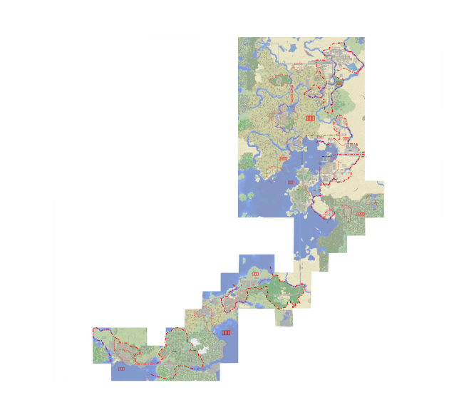

Staff Credits
製作者
あさひ
参加型に訪れた方々
sky trainさん (花屋を制作/隈本村に所在)
青空さん (公園を制作/雲丹津村に所在)
アップルパイさん (雲丹津駅の一部制作)
svgマップ
なんか知らんけどsvgってのが画質がいいらしい。
統一ID
これは運賃自動計算ツールを作る際にバグを阻止する為に決定されたものである。
国鉄nnr
西央線saio
北道kitamiti
古杭hurukui
大粗ooara
西大川nisiookawa
土ヶ崎tutigasaki
水平mizudaira
森坂morisaka
中江nakae
湯立yutati
山隈yamaguma
大森江oomorie
麓原humotobaru
雲丹津unitu
西隈nisiguma
大浜線oham
大浜oohama
市電ctr
市電線ctra
砂砦sasai
国鉄北道kokutetukitamiti
中央広場前tyuuouhirobamae
赤木筋akagisuji
南洲minamisima
赤川akagawa
牧場前bokujoumae
草端本町soubahonntyou
砂砦空港sasaikuukou
行原yukubaru
石湊iwanominato
亀洲前漁港kamenosimamaegyokou
芥子karasi
ネザーゲートウェイnezaGeTowei
北大川kitaookawa
元町motomati
西大川nisiookawa
大川郡庁前ookawagunntyoumae
築港鉄道ckr
築鉄本線cths
築鉄石金線ctik
築鉄分木町線ctwk
築鉄発電所線cthd